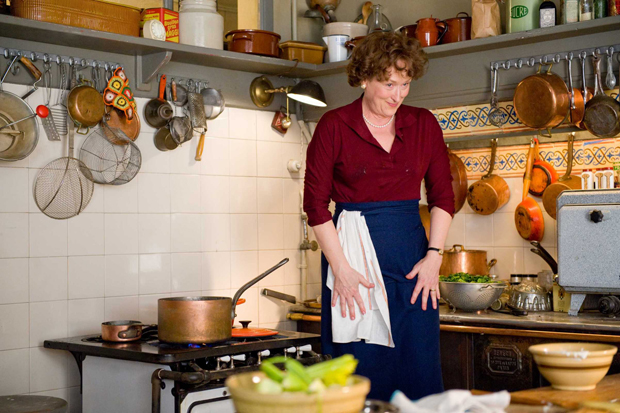

Paul问Julia：那你到底最喜欢什么呢？Julia不假思索地回答：吃。 说这话的时候，Julia Child一定没想到自己后来能成为美国一代电视名厨。跟随丈夫初到巴黎的她，觉得自己无所事事，总想找些事来做，又不愿回到她不喜欢的政府机构工作。最初也尝试了各种学习班，诸如做帽子，打桥牌这样的，都让她半途而废了，最后花掉高昂的学费进入蓝带烹饪艺术学院的专业厨师班才真正开启了她的美食探索之旅。从那以后，即使丈夫工作频繁调动，他们的居所也跟着不断迁移，即使她和两个朋友办的烹饪培训班入不敷出，即使花了10年功夫写成的烹饪食谱一再遭到出版社的拒绝，她也从来没有想过放弃。这，才是真正的最爱吧。
这段时间看的电影，总是有很强烈的代入感，这部电影《朱莉和茱莉亚》也是如此。想到就在几天前，依树和我还讨论过最喜欢做什么这个话题。我觉得自己好像越长大越难回答这个问题了，即使我真的喜欢一件事，也很难像Julia那样脱口而出。或者浮现出的第一个答案就是真的最爱？好像又不太敢确定。是不是自己顾虑太多，内心已经不够单纯？ 当你凭空想一件事的时候，或许很难知道那是不是就是你的最爱。只有你去做了，涉猎其中，并且感到欲罢不能，这样才能称作最爱吧。和Julia一样，我们都会走一些弯路，其实也不见得就是弯路，应该说只是一些发现最爱的铺垫。可能一开始我们会尝试一些自以为喜欢的事情，或者听从别人的意愿特别是父母的意愿去做一些别人以为我们适合的事情，所幸的是我们能即时发现这并非是自己的最爱，那就应该立刻去尝试想做的其他事，你的最爱一定还藏在这些意愿里，只是等着你突然某一天的恍然大悟。 前几天看了一篇文章，找不到了，有句话大概是这样：“Be the one you love to be, not the one you are supposed to be”. 以此，记录下自己看过《朱莉和茱莉亚》之后泛起了点小涟漪的心情。